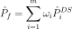
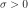
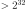
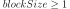

AdaptiveDirectionalSampling¶
-
class
AdaptiveDirectionalSampling(*args)¶ Adaptative directional simulation.
Parameters: event :
EventEvent we are computing the probability of.
rootStrategy :
RootStrategy, optionalStrategy adopted to evaluate the intersections of each direction with the limit state function and take into account the contribution of the direction to the event probability. Set to
SafeAndSlowby default.samplingStrategy :
SamplingStrategy, optionalStrategy adopted to sample directions. Set to
RandomDirectionby default.See also
Notes
Let denote the failure domain defined as , where are realization of the random vector and
 is the limit-state
function as defined elsewhere in the documentation.
is the limit-state
function as defined elsewhere in the documentation.The purpose of the ADS-2 algorithm and its variants is to estimate the following probability:

Principles
The ADS-2 method [Munoz2011] combines the stratified and directional sampling concepts. Stratified sampling consists in splitting the support of the random vector into
 mutually exclusive and collectively exhaustive subsets.
Here, ADS-2 splits the standard space into quadrants, where
mutually exclusive and collectively exhaustive subsets.
Here, ADS-2 splits the standard space into quadrants, where
 is the dimension of the random vector .
Stratified sampling is often run in two steps: (i) a learning step is used for
polling the input space and detect the subsets that contribute most to the
probability and (ii) an estimation step is used for estimating
the probability by weighted sampling (some subsets are more sampled than the others).
Directional sampling uses the spheric symmetry of the standard space for
estimating the failure probability as the average of conditional probabilities
calculated on directions drawn at random in the standard space.
is the dimension of the random vector .
Stratified sampling is often run in two steps: (i) a learning step is used for
polling the input space and detect the subsets that contribute most to the
probability and (ii) an estimation step is used for estimating
the probability by weighted sampling (some subsets are more sampled than the others).
Directional sampling uses the spheric symmetry of the standard space for
estimating the failure probability as the average of conditional probabilities
calculated on directions drawn at random in the standard space.The learning step uses an a priori number of random directions that is uniformly distributed over the quadrants, meaning the weights are as follows:
Directional sampling is used for estimating the failure probability in each quadrant:
and the corresponding estimation variances are denoted as . These probabilities are estimated using the same number of random directions per quadrant as told by the uniform weights distribution.
The probability of interest is then computed as a weighted average of the previously defined conditional probabilities:

where is the conditional probability estimator in the i-th quadrant. The corresponding variance of the stratified estimator reads:
where is the variance of the conditional probability estimator in the i-th quadrant.
At the end of the learning step, the weights
 are updated so
as to minimize the stratified estimator variance.
Indeed, it can be shown that the updated weights:
are updated so
as to minimize the stratified estimator variance.
Indeed, it can be shown that the updated weights:minimize the final estimation variance in eqref{eq:pf_est_sda2_var}. Note that some weights might be zero (due to a somewhat arbitrary rounding of the conditional probabilities’ estimation variance). The quadrants associated with a zero-weight will not be sampled in the estimation step.
Eventually, the estimation step proceeds in essentially the same way as the learning step with different weights for the quadrants though. eqref{eq:pf_est_sda2} and eqref{eq:pf_est_sda2_var} are used for evaluating the final probability probability estimate and its variance.
The computational budget per step is parametrized by a fraction of the total budget
 , such that .
The number of directions sampled in quadrant
, such that .
The number of directions sampled in quadrant  at step is then defined as follows:
at step is then defined as follows:The number of evaluation of the limit-state function
is of course
greater than the total budget since directional sampling is used.Variants
The ADS-2+ variant performs a dimension reduction step after the learning step for reducing the number of stratified quadrants. The statistic aggregates the sensitivity of expectation along dimension
 .
It is defined as follows:
.
It is defined as follows:It is used for ranking the contributions of the quadrants. Then, only the most influential variables according to are stratified, leaving the remaining variables simulated without stratification. The corresponding quadrants will not be sampled.
The DP-ADS-2 variant combines the ADS method with a rotation of the quadrants. The idea is to get a possible design point (available e.g. after a preliminary FORM analysis) on the bisector of one of the quadrants to make the stratification even more efficient and thus save some evaluations of the model.
This 2-step algorithm can be generalized to steps by adding more than one learning step. For now, only ADS-2 is implemented.
Methods
drawProbabilityConvergence(*args)Draw the probability convergence at a given level. getBlockSize()Accessor to the block size. getClassName()Accessor to the object’s name. getConvergenceStrategy()Accessor to the convergence strategy. getEvent()Accessor to the event. getGamma()Gamma accessor. getId()Accessor to the object’s id. getMaximumCoefficientOfVariation()Accessor to the maximum coefficient of variation. getMaximumOuterSampling()Accessor to the maximum sample size. getMaximumStandardDeviation()Accessor to the maximum standard deviation. getMaximumStratificationDimension()Maximum stratification dimension accessor. getName()Accessor to the object’s name. getPartialStratification()Partial stratification accessor. getQuadrantOrientation()Quadrant orientation accessor. getResult()Accessor to the results. getRootStrategy()Get the root strategy. getSamplingStrategy()Get the direction sampling strategy. getShadowedId()Accessor to the object’s shadowed id. getTStatistic()T statistic accessor. getVerbose()Accessor to verbosity. getVisibility()Accessor to the object’s visibility state. hasName()Test if the object is named. hasVisibleName()Test if the object has a distinguishable name. run()Launch simulation. setBlockSize(blockSize)Accessor to the block size. setConvergenceStrategy(convergenceStrategy)Accessor to the convergence strategy. setGamma(gamma)Gamma accessor. setMaximumCoefficientOfVariation(…)Accessor to the maximum coefficient of variation. setMaximumOuterSampling(maximumOuterSampling)Accessor to the maximum sample size. setMaximumStandardDeviation(…)Accessor to the maximum standard deviation. setMaximumStratificationDimension(…)Maximum stratification dimension accessor. setName(name)Accessor to the object’s name. setPartialStratification(partialStratification)Partial stratification accessor. setProgressCallback(*args)Set up a progress callback. setQuadrantOrientation(quadrantOrientation)Quadrant orientation accessor. setRootStrategy(rootStrategy)Set the root strategy. setSamplingStrategy(samplingStrategy)Set the direction sampling strategy. setShadowedId(id)Accessor to the object’s shadowed id. setStopCallback(*args)Set up a stop callback. setVerbose(verbose)Accessor to verbosity. setVisibility(visible)Accessor to the object’s visibility state. -
__init__(*args)¶ x.__init__(…) initializes x; see help(type(x)) for signature
-
drawProbabilityConvergence(*args)¶ Draw the probability convergence at a given level.
Parameters: level : float, optional
The probability convergence is drawn at this given confidence length level. By default level is 0.95.
Returns: graph : a
Graphprobability convergence graph
-
getBlockSize()¶ Accessor to the block size.
Returns: blockSize : int
Number of terms in the probability simulation estimator grouped together. It is set by default to 1.
-
getClassName()¶ Accessor to the object’s name.
Returns: class_name : str
The object class name (object.__class__.__name__).
-
getConvergenceStrategy()¶ Accessor to the convergence strategy.
Returns: storage_strategy :
HistoryStrategyStorage strategy used to store the values of the probability estimator and its variance during the simulation algorithm.
-
getId()¶ Accessor to the object’s id.
Returns: id : int
Internal unique identifier.
-
getMaximumCoefficientOfVariation()¶ Accessor to the maximum coefficient of variation.
Returns: coefficient : float
Maximum coefficient of variation of the simulated sample.
-
getMaximumOuterSampling()¶ Accessor to the maximum sample size.
Returns: outerSampling : int
Maximum number of groups of terms in the probability simulation estimator.
-
getMaximumStandardDeviation()¶ Accessor to the maximum standard deviation.
Returns: sigma : float, 
Maximum standard deviation of the estimator.
-
getMaximumStratificationDimension()¶ Maximum stratification dimension accessor.
Returns: max : int
Maximum stratification dimension.
-
getName()¶ Accessor to the object’s name.
Returns: name : str
The name of the object.
-
getPartialStratification()¶ Partial stratification accessor.
Returns: partialStratification : bool
Partial stratification.
-
getQuadrantOrientation()¶ Quadrant orientation accessor.
Returns: orientation :
PointQuadrant orientation.
-
getResult()¶ Accessor to the results.
Returns: results :
SimulationResultStructure containing all the results obtained after simulation and created by the method
run().
-
getRootStrategy()¶ Get the root strategy.
Returns: strategy :
RootStrategyRoot strategy adopted.
-
getSamplingStrategy()¶ Get the direction sampling strategy.
Returns: strategy :
SamplingStrategyDirection sampling strategy adopted.
-
getShadowedId()¶ Accessor to the object’s shadowed id.
Returns: id : int
Internal unique identifier.
-
getTStatistic()¶ T statistic accessor.
The statistic aggregates the sensitivity of expectation.
Returns: gamma :
PointT statistic value.
-
getVerbose()¶ Accessor to verbosity.
Returns: verbosity_enabled : bool
If True, the computation is verbose. By default it is verbose.
-
getVisibility()¶ Accessor to the object’s visibility state.
Returns: visible : bool
Visibility flag.
-
hasName()¶ Test if the object is named.
Returns: hasName : bool
True if the name is not empty.
-
hasVisibleName()¶ Test if the object has a distinguishable name.
Returns: hasVisibleName : bool
True if the name is not empty and not the default one.
-
run()¶ Launch simulation.
Notes
It launches the simulation and creates a
SimulationResult, structure containing all the results obtained after simulation. It computes the probability of occurence of the given event by computing the empirical mean of a sample of size at most outerSampling * blockSize, this sample being built by blocks of size blockSize. It allows to use efficiently the distribution of the computation as well as it allows to deal with a sample size  by a combination of blockSize and outerSampling.
-
setBlockSize(blockSize)¶ Accessor to the block size.
Parameters: blockSize : int, 
Number of terms in the probability simulation estimator grouped together. It is set by default to 1.
Notes
For Monte Carlo, LHS and Importance Sampling methods, this allows to save space while allowing multithreading, when available we recommend to use the number of available CPUs; for the Directional Sampling, we recommend to set it to 1.
-
setConvergenceStrategy(convergenceStrategy)¶ Accessor to the convergence strategy.
Parameters: storage_strategy :
HistoryStrategyStorage strategy used to store the values of the probability estimator and its variance during the simulation algorithm.
-
setGamma(gamma)¶ Gamma accessor.
The computational budget per step .
Parameters: gamma : sequence of float
Gamma value.
-
setMaximumCoefficientOfVariation(maximumCoefficientOfVariation)¶ Accessor to the maximum coefficient of variation.
Parameters: coefficient : float
Maximum coefficient of variation of the simulated sample.
-
setMaximumOuterSampling(maximumOuterSampling)¶ Accessor to the maximum sample size.
Parameters: outerSampling : int
Maximum number of groups of terms in the probability simulation estimator.
-
setMaximumStandardDeviation(maximumStandardDeviation)¶ Accessor to the maximum standard deviation.
Parameters: sigma : float,
Maximum standard deviation of the estimator.
-
setMaximumStratificationDimension(maximumStratificationDimension)¶ Maximum stratification dimension accessor.
Parameters: max : int
Maximum stratification dimension.
-
setName(name)¶ Accessor to the object’s name.
Parameters: name : str
The name of the object.
-
setPartialStratification(partialStratification)¶ Partial stratification accessor.
Parameters: partialStratification : bool
Partial stratification.
-
setProgressCallback(*args)¶ Set up a progress callback.
Parameters: callback : callable
Takes a float as argument as percentage of progress.
-
setQuadrantOrientation(quadrantOrientation)¶ Quadrant orientation accessor.
Parameters: orientation : sequence of float
Quadrant orientation.
-
setRootStrategy(rootStrategy)¶ Set the root strategy.
Parameters: strategy :
RootStrategyRoot strategy adopted.
-
setSamplingStrategy(samplingStrategy)¶ Set the direction sampling strategy.
Parameters: strategy :
SamplingStrategyDirection sampling strategy adopted.
-
setShadowedId(id)¶ Accessor to the object’s shadowed id.
Parameters: id : int
Internal unique identifier.
-
setStopCallback(*args)¶ Set up a stop callback.
Parameters: callback : callable
Returns an int deciding whether to stop or continue.
-
setVerbose(verbose)¶ Accessor to verbosity.
Parameters: verbosity_enabled : bool
If True, make the computation verbose. By default it is verbose.
-
setVisibility(visible)¶ Accessor to the object’s visibility state.
Parameters: visible : bool
Visibility flag.
-